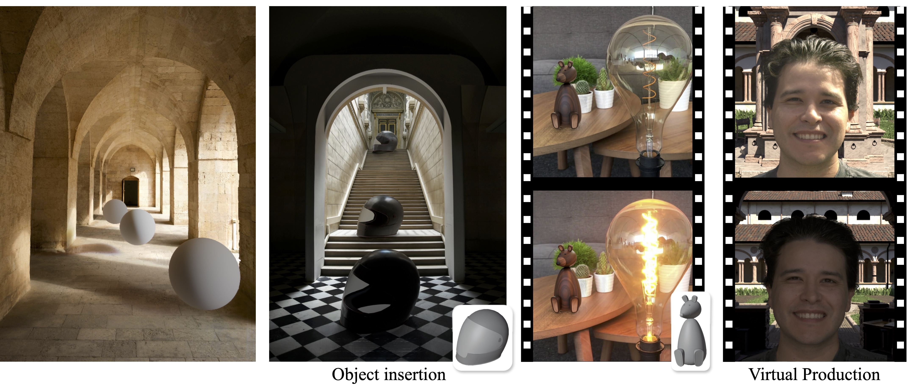
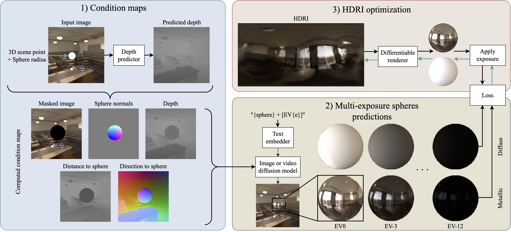

Lighting in Motion
Spatiotemporal HDR Lighting Estimation
CVPR 2026


We present LiMo, a diffusion-based approach to spatiotemporal lighting estimation. LiMo targets both realistic high-frequency detail prediction and accurate illuminance estimation. To account for both, we propose generating a set of mirrored and diffuse spheres at different exposures, based on their 3D positions in the input. Making use of diffusion priors, we fine-tune powerful existing diffusion models on a large-scale customized dataset of indoor and outdoor scenes, paired with spatiotemporal light probes. For accurate spatial conditioning, we demonstrate that depth alone is insufficient and we introduce a new geometric condition to provide the relative position of the scene to the target 3D position. Finally, we combine diffuse and mirror predictions at different exposures into a single HDRI map leveraging differentiable rendering. We thoroughly evaluate our method and design choices to establish LiMo as state-of-the-art for both spatial control and prediction accuracy.
From an input image or sequence of images, along with a given 3D target location, we first use off-the-shelf depth predictor and fov estimator to compute the 3D position per pixel. We then compute our condition maps: masked input image, depth, normals of the sphere, and our proposed distance and direction to the sphere for each pixel. These conditions are then fed to our diffusion model to generate the mirrored and diffuse spheres at multiple exposures. Finally, we optimized these spheres into a single HDRI map using differentiable rendering.

One of our key contributions is the introduction of novel geometry-based conditioning inputs for our diffusion model. We found that depth alone is insufficient to accurately capture the spatiality of the lighting estimation. Therefore, we introduce two additional conditions: distance to the target 3D position and direction to the target 3D position. From the estimated depth and fov, we compute the 3D position of each pixel in the input image. Our novel maps are then computed as the distance and direction from each pixel's 3D position to the target 3D location where the lighting is to be estimated. Additionally, to provide further guidance, the pixels on the sphere in the direction to the sphere map are set as the reflection direction. These conditions provide the model with more context about the spatial relationship between the scene's geometry and the target location.
This work was partially done during C. Bolduc’s internship at Eyeline Labs, and partially supported by an NSERC Canada Graduate Research Scholarship to C. Bolduc.
@InProceedings{LiMo2026,
author = {Bolduc, Christophe and Philip, Julien and Ma, Li and He, Mingming and Debevec, Paul and Lalonde, Jean-Fran{\c{c}}ois},
title = {Lighting in Motion: Spatiotemporal HDR Lighting Estimation},
booktitle = {IEEE/CVF Conference on Computer Vision and Pattern Recognition (CVPR)},
year = {2026}
}